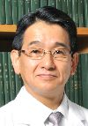

Yuji Naito, M.D., Ph.D., obtained his M.D. degree at the Kyoto Prefectural
University of Medicine, Kyoto, Japan in 1983, and performed Ph.D. studies
at the same university from 1983–1993. He received the Young Investigator
Award of the 6th Biennial Meeting of the Society for Free Radical Research
International (SFRRI), Torino, in 1992. He succeeded to serve as secretary
general and treasurer of SFRRI Kyoto in 2000. He has served as a secretary
general of SFRR Asia and SFRR Japan from 2000, and as a vise president
of SFRR Japan from 2011. He is currently an Associate Professor of Department
of Molecular Gastroenterology and Hepatology, Kyoto Prefectural University
of Medicine, where he investigates the role of reactive oxygen and nitrogen
species in gastrointestinal inflammatory diseases and carcinogenesis. Recent
focus of his research is to determine molecular targets of oxidative stress
in gastro-intestinal inflammation. In addition, his group has demonstrated
the roles of gaseous molecules, nitric oxide, carbon monoxide, and hydrogen
sulfoxide in the pathogenesis of inflammatory bowel diseases.